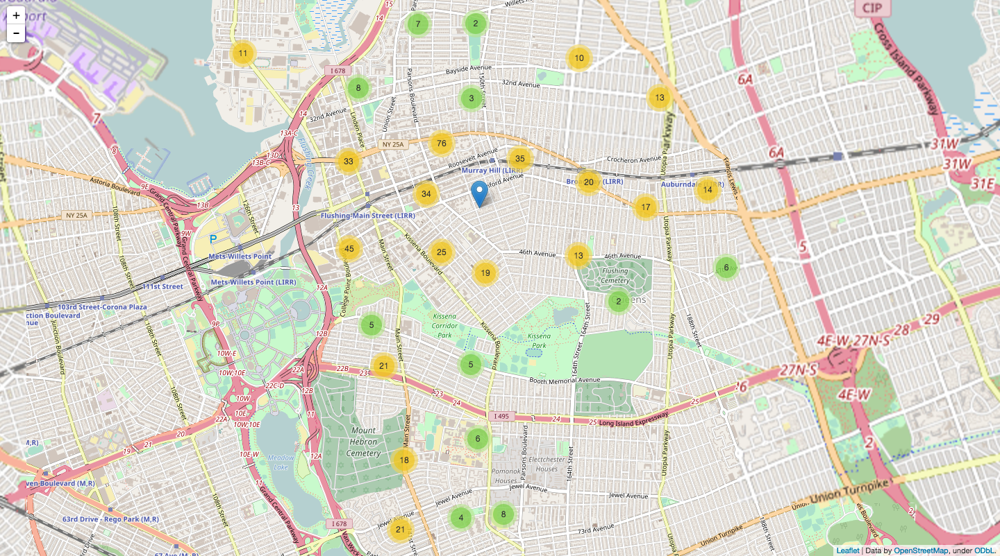
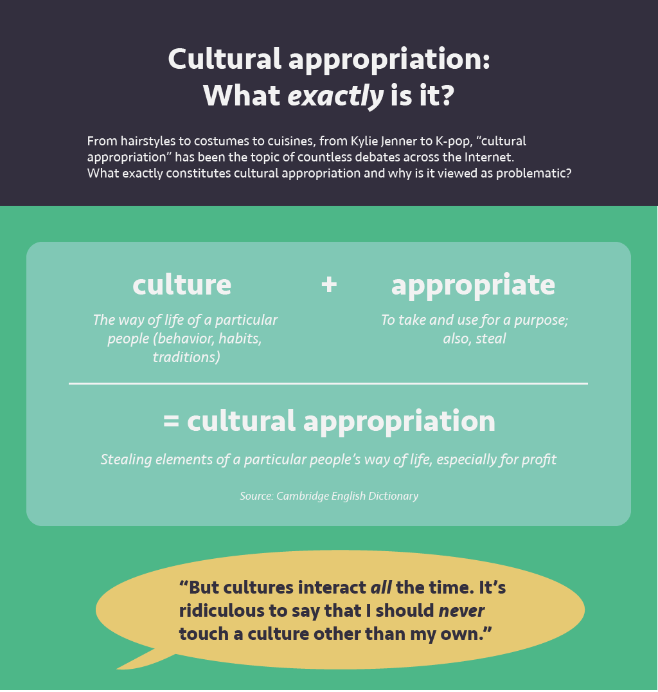
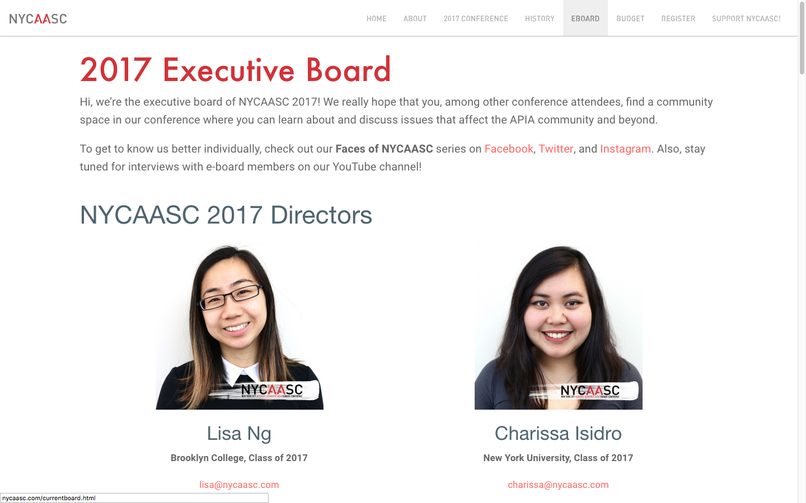
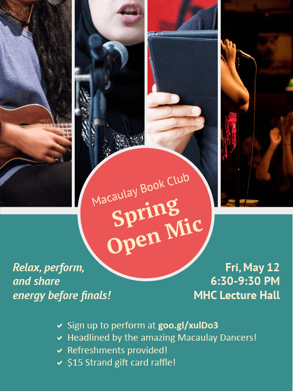

MHC 250 Python projects
January 2017–May 2017
Data Analysis, Python
Final project: Evaluating the Effectiveness of Bike Lanes in NYC
Classwork: Miscellaneous Data around Flushing, Queens
This special section of the Macaulay Honors Seminar 4 class "Shaping the Future of New York" took a data science-centered approach to analyzing immediate and long-term issues facing New York City, making use of Python to analyze open-source data provided by the city. My final project analyzed the effectiveness of bike lanes, using Union Square as a case study. Using data from the NYC Motor Vehicle Collisions dataset and the Python libraries pandas and folium and GeoJSON, we found that bike lanes were extremely effective in reducing bicycle accident rates.
MEDIA 180 cultural appropriation infographic
May 2017
Web, Infographic
Cultural appropriation is a very divisive topic; however, I believe that much of its controversy arises out of fundamental misunderstandings about what exactly entails cultural appropriation. For the final project of my MEDIA 180 class, I chose to create an infographic that provides a clear and concise explanation of the issue. The infographic takes advantage of visual hierarchy to help readers understand the general thrust of the content even before they read the text.

NYCAASC website redesign
January 2017 – April 2017
Web, User Interface
The New York City Asian American Student Conference (NYCAASC) is a student-run conference focused on creating an accessible space for fellow students to learn and feel empowered around Asian American social, political, and cultural issues. However, the NYCAASC website had many flaws that made it difficult for interested users to locate information; for instance, the organization's mission. The goal of redesigning the website was to translate the core value of accessibility into the website's user experience. This involved creating a style guide and user pathways that completely reimagined the aesthetic and information flows, respectively, from the perspective of the end user. The end result is a site that is clean, clear, and empowering.
Book Club posters
October 2016 – May 2017
Web, Poster
#LNYBC
November 2016 – present
Digital, Photography

"City life" isn't the same for everyone—some hearts just aren't cut out for it. This photography project began as a way to map out my own emotions in New York. It's the city where my body resides, where my mind operates, and where my heart doesn't belong. What does it stand for? ...That's up to you to imagine.